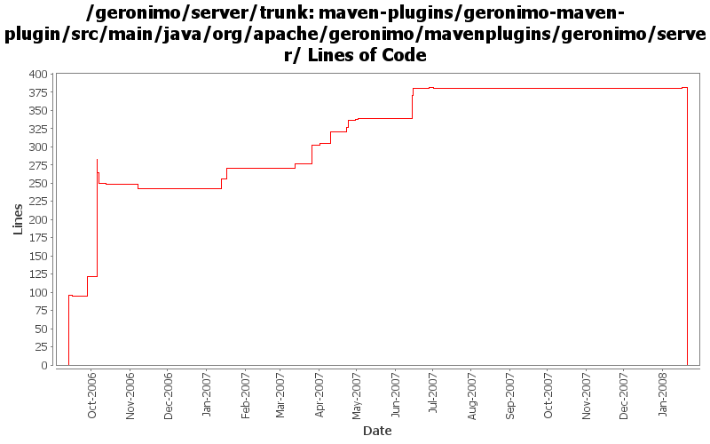

[root]/maven-plugins/geronimo-maven-plugin/src/main/java/org/apache/geronimo/mavenplugins/geronimo/server

| Author | Changes | Lines of Code | Lines per Change |
|---|---|---|---|
| Totals | 79 (100.0%) | 777 (100.0%) | 9.8 |
| jdillon | 50 (63.3%) | 552 (71.0%) | 11.0 |
| kevan | 11 (13.9%) | 137 (17.6%) | 12.4 |
| dwoods | 4 (5.1%) | 55 (7.1%) | 13.7 |
| prasad | 10 (12.7%) | 14 (1.8%) | 1.4 |
| djencks | 1 (1.3%) | 14 (1.8%) | 14.0 |
| akulshreshtha | 2 (2.5%) | 3 (0.4%) | 1.5 |
| gawor | 1 (1.3%) | 2 (0.3%) | 2.0 |
(GERONIMO-3771) Moved maven-plugins/* to buildsupport/*, updated groupId to org.apache.geronimo.buildsupport
0 lines of code changed in 10 files:
mark all files in bin/ dir as executable except the .bat files. this matches the behavior in ArchiverGBean. (GERONIMO-3694)
2 lines of code changed in 1 file:
(GERONIMO-3329) Fix sp of @parameter so javaVirtualMachine gets picked up correctly
1 lines of code changed in 1 file:
GERONIMO-3270 better technique for setting operation-order
0 lines of code changed in 1 file:
GERONIMO-3270 Avoid foreign key violations in CMP. Using operation-order avoids the problem
2 lines of code changed in 1 file:
Make canonical
1 lines of code changed in 1 file:
Make some files canonical
36 lines of code changed in 1 file:
(GERONIMO-3245) Allow the JVM used to launch the server or client to be configured
33 lines of code changed in 2 files:
GERONIMO-3011 Few more relative java.io.tmpdir, This will resolve relative to GERONIMO_BASE.
3 lines of code changed in 2 files:
GERONIMO-3114 Update setup of java.endorsed.dirs to always have ours before the JVM. Also updated java.ext.dirs to place ours before the JVM.
14 lines of code changed in 2 files:
Use {} around if blocks please!
4 lines of code changed in 2 files:
GERONIMO-3113 geronimo-maven-plugin creates a java.endorsed.dirs will a null path member on Linux
41 lines of code changed in 2 files:
Added more log detail about the verify timeout
Time the startup of the server
10 lines of code changed in 1 file:
Add flag to skip assembly installation for geronimo:start, this prevents extra work when geronimo:install has already been invoked
19 lines of code changed in 1 file:
Replace genesis plugin-support with mojo plugin-support
*FIX SOME EVIL INDENT TOO*
4 lines of code changed in 2 files:
Add propagateGeronimoProperties to allow org.apache.geronimo.* and geronimo.* properties to optionally propagate from maven to the forked server
26 lines of code changed in 1 file:
(GERONIMO-2951) Include -javaagent:bin/jpa.jar if the jpa.jar exists
7 lines of code changed in 1 file:
Std props
1 lines of code changed in 1 file:
GERONIMO-2736 add ability to run app clients in integration tests
14 lines of code changed in 1 file:
Add flag to allow build to continue if stop-server fails
15 lines of code changed in 1 file:
wrong param passed. should be "default".equals(id)
1 lines of code changed in 1 file:
wrong param used. should have been map.get(id)
1 lines of code changed in 1 file:
Using enum for install types
12 lines of code changed in 1 file:
'enum' is a reserved word when using 1.5 source, change to something which is not reserved
4 lines of code changed in 1 file:
GERONIMO-2537 Update the src headers in the non-module files. They need to be compliant with the new ASF src header and copyright policy (http://www.apache.org/legal/src-headers.html). I also did some cleanup of the src headers and tried to get them in a consistent format
135 lines of code changed in 9 files:
renamed getGoalName to getFullClassName to refelect the previous change.
4 lines of code changed in 4 files:
* getGoalName had hardcoded strings in them (mojo names)
* changed them to return the packageName + className
* surefire reporting needs the package name.
8 lines of code changed in 4 files:
Just log a warning when an option is specified by no optionSet was defined... instead of failing
3 lines of code changed in 1 file:
Do not let ant log errors... allow all output to be captured by the log file
0 lines of code changed in 1 file:
Update to reflect latest genesis changes
2 lines of code changed in 2 files:
Use setSystemProperty() from MojoSupport
0 lines of code changed in 1 file:
Refactored to allow a set of optionSet id's to be used to select more than one
Removed debug* bits this can now be done with optionSets
51 lines of code changed in 1 file:
Add support for optionSets, to allow for greater flexibility to configure the server
139 lines of code changed in 2 files:
Add goal to simply wait for a server to be started
18 lines of code changed in 1 file:
Add org.apache.geronimo.base.dir, java.io.tmpdir, java.endorsed.dirs and java.ext.dirs properties to the child vm
37 lines of code changed in 1 file:
(GERONIMO-2419) Enabling logging for start-server, hooked up reporters API for exception handling, Adding a Surefire reporter which will output reports in a surefire manner, so we can re-use the surefire html report fluff to visualize
Massaged from reporters.patch by Prasad
32 lines of code changed in 4 files:
Fix some method modifiers, doExecute should be protected
0 lines of code changed in 1 file:
Log he waiting line as debug
1 lines of code changed in 1 file:
(GERONIMO-2359) Applied modified versions of patches submitted by Prasad (thanks)
Moved all server related mojos to the o.a.g.m.g.server package
Added all new module mojos to the o.a.g.m.g.module package
Renamed install, start and stop goals to install-assembly, start-server and stop-server
Added aliases for install, start, stop that point to install-assembly, start-server, stop-server
Adding (augmented from patches) start-module, stop-module, deploy-module and undeply-module
Added aliases deploy and undeploy that point to deploy-module and undeply-module
Added list-modules goal to show what modules are running and non-running
Module operations show tree-like view of targetId's when available
96 lines of code changed in 7 files: